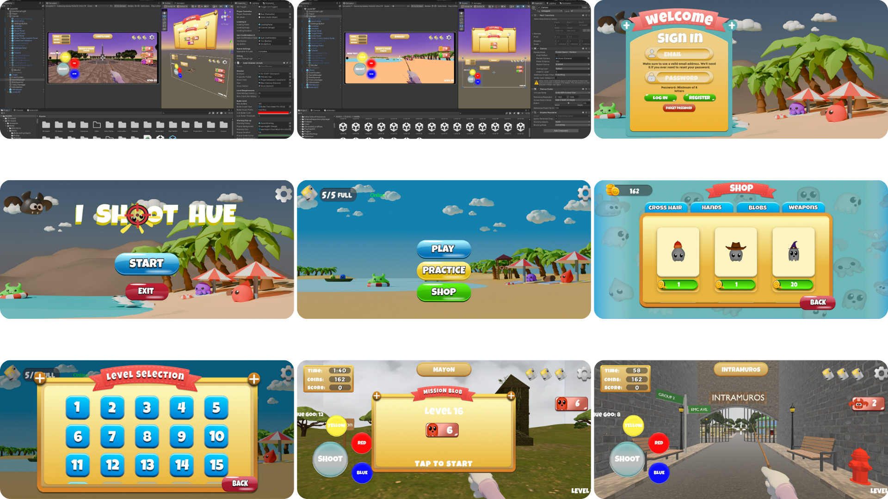
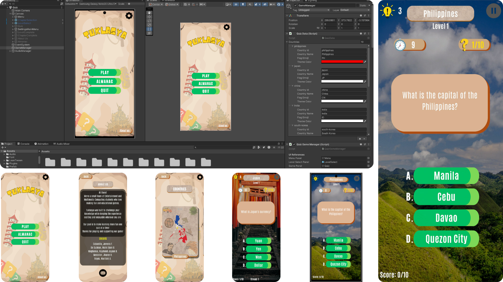
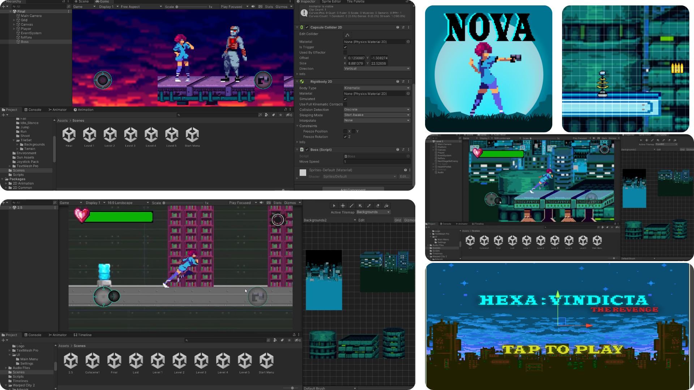
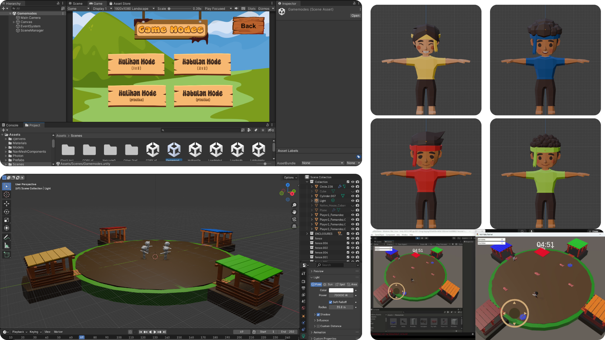
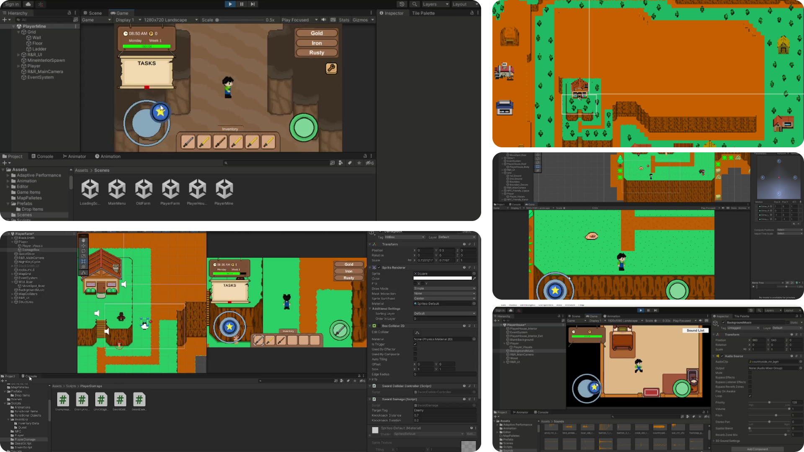
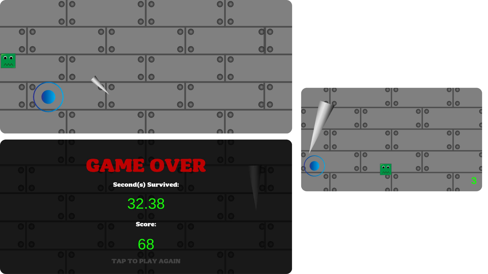

BS in Entertainment and Multimedia Computing
See My WorkI love creating things, whether it's a game in Unity, a 3D model in Blender, a simple graphic design, or photography and videography. I'm always learning and looking to improve my skills.
During my studies, I worked on several projects involving game development (2D and 3D games), application development, 3D Modeling, and multimedia design. I'm open to opportunities in game development, multimedia, and creative tech.

A 3D mobile arcade game designed to teach color theory through reflex-based gameplay. Players shoot the correct colors in real time, applying their understanding of primary, secondary, and complementary color relationships under time pressure. Evaluated by 52 participants and received an overall ISO/IEC 25010 rating of 4.25 (Excellent).
My role: Programmer (Backend & Frontend - Unity) & QA
Tools used: Unity, C#, Blender, Photoshop, Illustrator, Figma

An educational mobile quiz game that teaches players about the diverse countries of Asia. Structured into chapters per country (Philippines, Japan, China, etc.), with timed multiple-choice questions, streak bonuses, hints, and an in-game Almanac review mode.
My role: Programmer, QA, and 3D Artist - sole Unity developer on the team
Tools used: Unity, C#, Blender, Photoshop, Illustrator, Canva

A 2D mobile story-based combat game set in a futuristic world called Anvil in the year 3010. The player takes on a quest for revenge, parkourring through 6 levels and collecting gun parts before facing a final boss. Inspired by Windmill (GX Game) with a focus on smooth combat and controls accessible to casual players.
My role: Programmer & QA (Backend / Gameplay Logic, System Integration & Testing)
Tools used: Unity, C#, Photoshop, Illustrator

A 3D multiplayer game inspired by pig-chasing contests in Philippine festivals. Features two modes — Hulihan (battle royale pig catching) and Habulan (team herding) — with buffs, player skills, stamina mechanics, a lobby/host system, and two unique arena maps.
My role: 3D Assets Designer, Programmer, and QA
Tools used: Unity, C#, Blender, Photoshop, Illustrator

A mobile life simulation game set in a Philippine-themed environment. Players can farm crops, explore a cave mine, fight enemies, and forage wild plants across multiple areas. Features a day/night cycle, crafting system, weapon durability, and inventory management.
My role: Programmer & QA
Tools used: Unity, C#, Photoshop, Illustrator, Pixilart

A 2D mobile survival game where the player must dodge falling spikes for as long as possible. Tracks a live timer showing how many seconds the player survives, along with a score, with the option to play again after game over.
My role: Solo developer
Tools used: Unity, C#
Feel free to reach out.